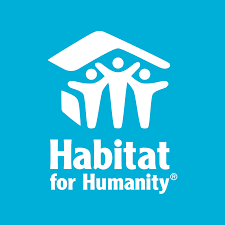
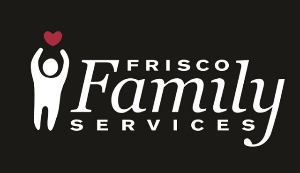

Volunteer at Habitat for Humanity
During the summer of 2018, I would go to the Resale store of Habitat for Humanity and I would volunteer during the day helping move furniture around the store and assembling donated furniture in the back. I would also help move furniture into customers' cars. Link
Volunteer at Frisco Family Services
During the summer of 2019, I would volunteer at the Frisco Food Pantry and Frisco Resale store. At the food pantry I would help with picking up donations at stores and cleaning up the store when some of the food has expired. In the resale store, I would pick out unnecessary items and also help move items in and out of customers' cars. Link